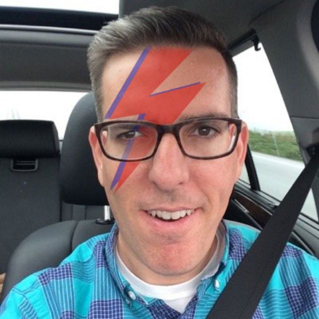

Pop Life, Episode 5: John Gruber
@anildash has started the show and the Q&A prompt is “Ask John anything!”.
@anildash3:54pm, Aug 23 2016
We'll be starting in one hour, but you can submit your questions now!

This Talkshow has just been featured!
@anildash4:51pm, Aug 23 2016
We'll be starting in just 10 minutes — get your questions in now just by typing below.
@gruber is now a host.
@anildash5:01pm, Aug 23 2016
Welcome, John!
@gruber5:01pm, Aug 23 2016
Here I am.
@anildash5:01pm, Aug 23 2016
Thanks for joining me, really glad to have you on.
Before we get into back story and all the various things you do, let me ask you a tough question…
You're picky about things. You sweat the kerning. You have an opinion on how clicky your keyboard is.
Is there anything where you don't care much about the details?
Like, picture's hanging crooked on the wall, it doesn't bug you?
@gruber5:03pm, Aug 23 2016
That's a good question. I'm sure the answer is yes, but off the top of my head I can't think of what it is. Anything I notice, I care about.
@anildash5:04pm, Aug 23 2016
Hahaha. So if the ice cube in your drink isn't perfectly square, does the bartender hear about it?
@gruber5:04pm, Aug 23 2016
Like, whatever the things are I don't care about, I don't even know, because they're things I don't notice.
No, I don't care about that. But I would notice if the drink wasn't cold enough, which is what matters. I wouldn't send it back though. I'd just complain to whoever I was with.
I can't remember ever having sent a dish (or beverage) back.
@anildash5:06pm, Aug 23 2016
Makes sense. Ok, we have a bunch of audience questions I'm excited to get to and a number of things to plumb the depths of. Let me start first with the plug: daringfireball.net, your venerable and indispensable blog about Apple and design culture.
@gruber5:06pm, Aug 23 2016
That's a good description.
@anildash5:06pm, Aug 23 2016
(Yeah, the sending it back is a different aspect of personality than noticing the flaw.)
Due to a lot of recent changes on the internet, it feels like DF is almost this crazy escapee from another era of the web, that somehow made it.
@gruber5:07pm, Aug 23 2016
More and more, I see it that way too.
@anildash5:08pm, Aug 23 2016
We saw Gawker just shut down, I'd closed down ThinkUp (about which you said many kind things! Thank you.) and of course your note taking app Vesper just announced its shutdown.

@reyner5:08pm, Aug 23 2016
What’s your evaluation of the current state of independent blogging/publishing? Would you start Daring Fireball today?
@gruber5:08pm, Aug 23 2016
I have mixed feelings about Gawker's demise.
@anildash5:08pm, Aug 23 2016
@reyner phrased the question well.
@gruber5:09pm, Aug 23 2016
I would. And I think it's possible for DF-like sites to succeed today. My friend Jason Snell started his indie site Six Colors (sixcolors.com/) just two years ago, and he's doing great.
@anildash5:10pm, Aug 23 2016
So there are exceptions. But Jason was already fairly well known & respected. Could an upstart do it?
@gruber5:10pm, Aug 23 2016
In some ways, the quality-not-quantity approach might be more likely to work today than when I started, because it stands more clearly apart from the norm.
@anildash5:11pm, Aug 23 2016
Is that true outside of tech reporting & opinion? Would it work for politics? Fashion?
@gruber5:12pm, Aug 23 2016
I don't know! But when I got DF off the ground, when it actually started making a little money, I really thought this was the future of short form writing. Being on your own. A blog for every writer. I was very wrong.
@anildash5:12pm, Aug 23 2016
And let me get to the heart of something specific to your beat in writing about Apple…
Yeah, I thought everybody would have their own blog. We do, we just call it our Facebook or twitter or Instagram.
So, it's increasingly hard to be credible about the clang compiler and Chinese ride sharing policy and the latest Hermés accessory fashion trends.
@gruber5:13pm, Aug 23 2016
I think what has happened is that now that there are so many web publications, budding writers get snapped up as staff before their personal sites can ever take root. We've circled back to where writers are simply trying to get hired, because it's so damn hard to make a living as a writer.
@anildash5:14pm, Aug 23 2016
Along with retail merchandising and microchip manufacturing and typography, etc…
But these are just some of the areas that fall under the purvey of writing about "Apple". And it connects to your point about it being hard to make a living — nobody can get a gig covering all those areas.
When you started, having a site about Apple was radical. It was maybe even seen as too narrow.
Can one person cover Apple today?
@gruber5:17pm, Aug 23 2016
You know this, but I've never thought of Daring Fireball's domain as "Apple". It's really just what I'm interested in. It just happens that Apple has been what I've been interested in for a long time. I thought they were really interesting as a niche tech company in 2002. And I think they're really interesting as an industry behemoth today.
If they ever get boring though, I'll just find other things to write about.
@anildash5:17pm, Aug 23 2016
They've almost always been the most interesting company in the computer business.
@gruber5:18pm, Aug 23 2016
I don't think one person can cover "Apple" today. I certainly don't. There are aspects of Apple that I just skip over. Although the format of DF makes it possible for me to just link to the stuff I don't write about in detail personally.
@anildash5:18pm, Aug 23 2016
I can see you writing about other things, it's just fascinating to watch as Apple remains relevant and interesting but becomes almost too big to comprehend.
@gruber5:19pm, Aug 23 2016
For example, Apple's dealings with music labels and movie studios -- I just link to Peter Kafka.
@anildash5:19pm, Aug 23 2016
Makes sense. Link to the best.
So there's an interesting shift since DF started, as you became a father, grew up, you've seemed more willing to engage on some social issues & political issues on the site. And lately we've seen Apple (post Jobs) stepping up in a similar way…
So you think it's more that the company changed or their willingness to talk about things like marriage equality changed?
@gruber5:21pm, Aug 23 2016
I was pretty vocal about Sarah Palin in 2008. That election period was almost certainly the most controversial run on DF.
@anildash5:21pm, Aug 23 2016
Like, they didn't use to match employee donations to charity the way they do now.
Ah, Palin. Seems quaint now.
@gruber5:21pm, Aug 23 2016
I think that's clearly Tim Cook vs. Steve Jobs.
@anildash5:22pm, Aug 23 2016
It's interesting because most other "Steve would never do that" arguments seem spurious to me but this is a clear leadership change.
@gruber5:23pm, Aug 23 2016
But society as a whole has changed very quickly too. I mean, in 2008, Obama was still in favor of "civil unions", not full marriage equality. It makes sense that a big corporation like Apple would change its public stance in the same period.
@anildash5:23pm, Aug 23 2016
So they're following society.
I guess I mean more their willingness to say anything about a social issue, regardless of its popularity.
@gruber5:24pm, Aug 23 2016
If Steve Jobs were still alive I wouldn't be surprised if Apple were more publicly committed to issues like LGBT rights than they were before, but I highly doubt it would be to the degree we see under Cook.
@anildash5:24pm, Aug 23 2016
Makes sense.
Alright, I want to get into Vesper a bit.
Seemed like this was a note taking app but also a labor of love & an excuse to work with friends, too. Yeah?
What changed since the launch?
@gruber5:25pm, Aug 23 2016
Exactly. It was Brent's idea for the three of us to work together on "an app". I've known Brent forever and have always considered him someone I'd love to work with.
The bottom line is we never made enough money. That's the bottom line.
@anildash5:26pm, Aug 23 2016
Brent is Brent Simmons, beloved indie software developer: inessential.com
Do the economics of iOS apps work for the indie software model we all grew up with 10-20 years ago? (Putting aside games & in-app purchase shenanigans.)
@gruber5:27pm, Aug 23 2016
What we should have done, I think, is the Mac app first. We could have charged more, maybe say $20. The audience for Mac apps is smaller than for iOS apps, but I don't think the audience for paid Mac apps is that much smaller than for paid iOS apps.
@anildash5:27pm, Aug 23 2016
Plus the prices are higher.
And there's likely less competition than on iOS.
@gruber5:28pm, Aug 23 2016
There are always exceptions, but I think the answer is no: you can't sell indie apps for iOS like you can for Mac.
@anildash5:28pm, Aug 23 2016
Seems like every indication backs that up.
@gruber5:28pm, Aug 23 2016
If we made the Mac app first, then wrote the sync engine, then did the iPhone app, I think maybe we could have made it.
@anildash5:29pm, Aug 23 2016
Let me throw to a few audience questions on this…
@q5:29pm, Aug 23 2016
What app will you use for note-taking now?
@RWHBray5:29pm, Aug 23 2016
With Vesper closing down (I have two books worth of notes on Vesper - very grateful it existed) what notes app are you using now?
@gruber5:29pm, Aug 23 2016
Doing the Mac app first might have given us the revenue we needed. Doing the iPhone app first, at $5, did not.
@maxjacobson5:29pm, Aug 23 2016
Curious if you'll make another app
@gruber5:30pm, Aug 23 2016
I think I'll switch to Apple Notes. I honestly haven't decided yet -- I'm a bit in denial about Vesper going away. It's still in my iPhone dock.
@anildash5:30pm, Aug 23 2016
I still have a ThinkUp bookmark in my dock that goes to a 404.
deletes
@gruber5:30pm, Aug 23 2016
One of the contributing factors to Vesper's demise is that Apple has made their Notes app a lot better than it used to be.
@anildash5:31pm, Aug 23 2016
It has massively improved. There is that weird thing about getting sherlocked…
You can careen from needlessly worrying to getting complacent to being caught off guard.
@gruber5:31pm, Aug 23 2016
Would I make another app? Maybe, but I have no plans at the moment. I really did love getting back into design, though.
@daveaiello5:32pm, Aug 23 2016
What was your approach to talking about Vesper on DF and TTS? I liked the balance you struck of talking about it, but not incessantly.
@reyner5:32pm, Aug 23 2016
How did your experience with Vesper influence your commentary and overall thinking about the Apple ecosystem?
@gruber5:32pm, Aug 23 2016
We three (me, Brent, and designer Dave Wiskus) have been around long enough to know that anything that might get Sherlocked eventually will. I wasn't the least bit surprised when Apple put some long overdue love into the built-in Notes app.
@daveaielllo Like everything I write at DF, I just go with my gut. I asked myself how much Vesper-relegated promotion I would want to read if I were just a a DF reader.
@anildash5:34pm, Aug 23 2016
("Sherlocked" definition: www.urbandictionary.com/define.php )
@gruber5:35pm, Aug 23 2016
That said, writing about Vesper at all, period, seemed to drive a small number of people crazy. Some people have it in their heads that it's "not fair" for someone with a soapbox like DF to use it to promote something else they've done. Marco Arment has commented at length about this phenomenon.
I just write those people off, though. I felt good in my gut about how much I promoted Vesper.
@anildash5:36pm, Aug 23 2016
Yeah, having a platform to promote an app is an advantage over those who don't. Not much else to say than that.
@gruber5:36pm, Aug 23 2016
@reyner I don't know that my experience with Vesper changed my thinking much about the Apple ecosystem -- more or less, it reaffirmed what I already believed.
@anildash5:37pm, Aug 23 2016
Before we jump into some other questions, I'll pause for a sec. Since Pop Life doesn't have sponsors, we feature a worthy cause that our guest wants to support. We call this segment…
Today we're gonna talk about FARE: www.foodallergy.org/
Food Allergy Reduction & Education. Can you tell folks why FARE matters so much to you?
@gruber5:40pm, Aug 23 2016
My son Jonas (12, heading into 7th grade next month) has a severe dairy allergy. My best example is that in a controlled test, at a hospital, he drank one-eighth of a teaspoon of milk -- 1/8 of a teaspoon! -- and within a few minutes he went into shock and passed out.
@anildash5:41pm, Aug 23 2016
That's a parent's greatest imaginable stress.
@gruber5:42pm, Aug 23 2016
It's a scary thing, really. So we've done a lot over the years to raise awareness and funding to food allergy charity. FARE does great work.
@anildash5:42pm, Aug 23 2016
And this is a true allergy, not a sensitivity or some other immune reaction.
@gruber5:42pm, Aug 23 2016
It's topical this week too: well.blogs.nytimes.com/2016/08...
@anildash5:43pm, Aug 23 2016
So do you carry an epi-pen everywhere?
@gruber5:43pm, Aug 23 2016
Long story short, there's a device called an EpiPen, a magic marker size thing that you inject in your thigh if you're going into anaphylactic shock. Literally life-saving.
@anildash5:43pm, Aug 23 2016
This is the new Shkreli, though, right?
@gruber5:44pm, Aug 23 2016
We've been lucky -- Jonas has never once needed to use one. But we have them in the house, have one with us wherever we go, and he has two at school.
@anildash5:44pm, Aug 23 2016
Like the most inexcusable drug profiteering?
@gruber5:45pm, Aug 23 2016
Right: there's only one company that makes them. Their sole competitor had to do a recall last year, and after that, they jacked the price up by 4x. It's unconscionable.
@anildash5:45pm, Aug 23 2016
Phew.
@gruber5:45pm, Aug 23 2016
Mylan is the name of the company. Dirt bags.
@anildash5:46pm, Aug 23 2016
Okay, so folks can at least help with education and research on these issues by going to www.foodallergy.org/donate
YOU GO TO HELL MYLAN
@gruber5:46pm, Aug 23 2016
We can afford the price hike. And we have good insurance that covers the first two. We pay out of pocket for the "extras" that we buy for him to keep at school. But at $500 a pop, a lot of people simple can't afford them. It's scary.
@anildash5:46pm, Aug 23 2016
We have anti-sponsors on Pop Life.
Alright, I'm gonna jump back to questions here, people are very excited to get to ask you things!
@gruber5:48pm, Aug 23 2016
I'm ready.
@anildash5:48pm, Aug 23 2016

@niceguytechnology5:48pm, Aug 23 2016
When will DF have a responsive layout? It drives me nuts every time I visit on my iPhone.
@anildash5:48pm, Aug 23 2016
This is a proxy for my question, which is I am old & when is the font getting bigger?
@gruber5:48pm, Aug 23 2016
Responsive layout: "soon", but I've been saying that for a while now.

@mathowie5:49pm, Aug 23 2016
How did you feel about this app being called Talkshow? Pissed? Annoyed? Indifferent? None of the above?
@carlmesnerlyons5:49pm, Aug 23 2016
Hey John how do you feel about this app having the same name as your podcast?
@gruber5:49pm, Aug 23 2016
Font: same time. The problem is that in my head I want to measure twice, and cut once -- one redesign that solves all problems and is good for the next 20 years. ("Design update" more than "redesign", but you know what I mean.)
@anildash5:50pm, Aug 23 2016
(Idea: GIANT FONTS)
Everybody is convinced you are mad at @sippey, @gknauss and the rest of the Talkshow team.
@gruber5:51pm, Aug 23 2016
I don't mind the app being named "Talkshow" at all. You can't use a name like "The Talk Show" and not realize the risks of using a generic name. I would be pissed, however, if this app were named "Daringfireball".
@anildash5:51pm, Aug 23 2016
takes note
@gregrobertson5:52pm, Aug 23 2016
Did he ever have any conversations directly with Steve Jobs?
@gruber5:52pm, Aug 23 2016
If I were mad I'd be mad publicly. I'm not one to simmer in silence.
@anildash5:52pm, Aug 23 2016
Good Steve question!
@gruber5:53pm, Aug 23 2016
I spoke with Steve Jobs in person twice. And I received one email from him, out of the blue.
@anildash5:53pm, Aug 23 2016
Was it a cease & desist?
I always joked that when I finally got an email from Prince it was gonna be a C&D.
@gruber5:55pm, Aug 23 2016
Ha, no. The email was informative. I've never written about it though, and I won't get into it here.
@anildash5:55pm, Aug 23 2016
Fair enough.
@AaronIsaacs5:55pm, Aug 23 2016
All time favorite baseball player?
@gruber5:55pm, Aug 23 2016
The first time I met him was the most interesting. It was after the WWDC keynote where they introduced the iPhone 4. The first one that went retina.
@misterbrandt5:55pm, Aug 23 2016
Don't forget the Yankees!
@anildash5:56pm, Aug 23 2016
Oh that was one of the biggest Apple moments ever.
Especially post Gizmodo iPhone leak.
@gruber5:56pm, Aug 23 2016
There was a hands-on area in Moscone, a big area to the side, where they had iPhone 4 units on tables for examination. At one point I wound up talking to Katie Cotton, and after a few minutes she said, "Would you like to meet Steve?"
Me: "Has anyone ever said no to that question?"
Katie: Laughed "No."
@anildash5:57pm, Aug 23 2016
"IS MY FONT TOO TINY, KATIE? IS THE SKY BLUE?"
@gruber5:58pm, Aug 23 2016
And she brought me over and introduced me. It was after the one time he emailed me, so I knew he knew who I was. And we had a brief but fascinating discussion about the retina display and iOS graphics performance.
@anildash5:58pm, Aug 23 2016
Nerds nerding out.
@gruber6:00pm, Aug 23 2016
We were talking about scrolling performance, and how the iPhone 4 had to draw 4x the pixels to get 2x the resolution, and still do it smoothly. This, at a time when Android scrolling performance was just awful. I asked him how Apple could be so far ahead. He said "John, nobody else gives a shit."
@anildash6:00pm, Aug 23 2016
Hahaha. A classic Jobs combination of both arrogance and accuracy.
I respect it.
@gruber6:01pm, Aug 23 2016
The other interesting tidbit from that conversation was that I said something to the effect of "You guys have been working on graphics performance ever since 2001" or something like that, alluding to Mac OS X 10.0.
@anildash6:02pm, Aug 23 2016
Quartz was such a huge part of that rollout.
@gruber6:02pm, Aug 23 2016
He immediately jumped back at me with "No, we've been killing ourselves over graphics since 1989." Alluding to NeXTstep 1.0.
@anildash6:02pm, Aug 23 2016
But those parts dated back to nextstep, right?
@gruber6:02pm, Aug 23 2016
Favorite baseball player: growing up, Don Mattingly. No question.
@anildash6:03pm, Aug 23 2016
Right, yeah. Everything is a decade-long overnight success.
@gruber6:03pm, Aug 23 2016
Adult years: can't decide between Jeter and Mariano Rivera.
@anildash6:03pm, Aug 23 2016
I love the Yankees questions because it's always wonderful to me how much you live your passions.
Like, I think Kubrick is great, but I'm not a super fan. But I'm a fan of your fandom of him.
@gruber6:04pm, Aug 23 2016
Anil, that's what was so telling about his answer. That Jobs was constantly aware of the fact that the iPhone was the result of decades of iterative work. Hard work.
@anildash6:05pm, Aug 23 2016
There's also just a fluency and literacy in the work. He knew where the bodies were buried in every detail of making that phone. It seems like that's far less common in a lot of tech execs today.
@gruber6:05pm, Aug 23 2016
I don't think Jobs ever spent much time thinking about old products. But he was constantly aware of the previous work. The effort and the process were in his mind, not the old devices themselves.
@anildash6:06pm, Aug 23 2016
Well, everything that preceded was just a temporary filler until the truly great next thing arrived.
I'm curious because Kubrick was similarly seen as obsessive over detail, what are the parts of his craft that you think casual fans don't know or might not see?
@gruber6:07pm, Aug 23 2016
I think one difference between Kubrick and Jobs is that Jobs was better about putting his perfectionism aside to actually ship.
@anildash6:08pm, Aug 23 2016
Well, perhaps because you can ship software updates after the fact but directors' cuts don't always come out.
@gruber6:08pm, Aug 23 2016
We don't talk about it much, but post-The Shining, Kubrick's perfectionism got the best of him.
@anildash6:08pm, Aug 23 2016
Unless you're George Lucas and can ship service packs for a decade or more.
He becomes his own enemy with that obsessiveness?
@gruber6:09pm, Aug 23 2016
He only made two films between 1980 and his death in 1999.
@anildash6:09pm, Aug 23 2016
Whereas Jobs' second act is almost the opposite, it's loosening up just enough to ship on a disciplined rhythm.
A different obsession!
@JustinRPayne6:10pm, Aug 23 2016
Any thoughts on the last Bond film Spectre??
Speaking of Vesper, thoughts on who should be the next Bond?
@gruber6:11pm, Aug 23 2016
I think "Spectre" was just terribly written and conceived. The more I watch it the lower my esteem is for it. Never should have been made.
@anildash6:11pm, Aug 23 2016

@gruber6:13pm, Aug 23 2016
By all accounts Daniel Craig no longer enjoys playing Bond. That's fine. But he should have given up the role before making another movie, rather than make one where he's miserable.
@anildash6:13pm, Aug 23 2016

@gruber6:13pm, Aug 23 2016
Part of the appeal of the franchise is that James Bond enjoys being James Bond. In "Spectre" it's palpably opposite.
@anildash6:14pm, Aug 23 2016
On the other hand, Harrison Ford seemed like the only one having fun in Crystal Skull. So we can't rely on the actors either.
@gruber6:15pm, Aug 23 2016
That's another one where all the problems were in the script.
@anildash6:15pm, Aug 23 2016
So you support my campaign for Lupita Nyong'o to be the new James Bond? Good.
@gruber6:15pm, Aug 23 2016
Next Bond: no strong feelings.
@anildash6:16pm, Aug 23 2016
Good name for a film!
Ok, will end with questions on your creative process…
@coachmike666:16pm, Aug 23 2016
How long does it take you to write one of the "thought" pieces for DF? Like the recent reaction to Bloomberg rumours of Watch 2?
@morisy6:17pm, Aug 23 2016
If you were starting out today, with same interests and sensibilities, do you think you'd still do the blog? The podcast? Other mediums?
@keithmonaghan6:17pm, Aug 23 2016
It's late at night. You're writing a long piece for Daring Fireball. What drink is in the glass on your desk?
@anildash6:17pm, Aug 23 2016
:)
@gruber6:19pm, Aug 23 2016
The Bloomberg piece came out quickly. Although, if you look, it came out a day or two after the Bloomberg piece was published. I'd describe the process thus: I read the Bloomberg story, and it didn't sit right with me. I let it stew in my head. Two days later, I could see exactly what didn't sit right with me about it. And I wrote the piece in maybe an hour or two.
There's no pattern to it though. I find it easier in general though to write something in response to something else.
@anildash6:21pm, Aug 23 2016
It's catalyzed by something out in the world that resonates with something you were already ruminating on?
@gruber6:22pm, Aug 23 2016
@morisy I think so. I will say this: I've long thought of myself as a writer who has a podcast on the side. But I probably should think of myself as a writer/podcaster. The podcast is every bit as popular as my writing. That's hard for me to fully embrace though. I think I'm so much better at writing than broadcasting.
@keithmonaghan If I'm writing late at night, it's fizzy water. I do like to drink alcohol, but I like it because it takes away the edge. But that edge is what I need to write well.
@anildash6:25pm, Aug 23 2016
Yeah, I find if my righteous indignation peters out, the writing suffers.
@gruber6:26pm, Aug 23 2016
@anildash I'd just say that the "media criticism" pieces I write come out easier.
@anildash6:26pm, Aug 23 2016
But you face no such quandaries!
Okay, that's more fair. :)
And that is a very nice place to end our little Talkshow.
@gruber6:26pm, Aug 23 2016
Now that I'm in my 40s, I find it harder to write late at night. I'm still a night owl, but my mental energy isn't there late at night any more.
@anildash6:27pm, Aug 23 2016
Yeah, plus children make the late night writing a bigger challenge!
Thanks so much for joining me today, John. I think we could have gone another hour.
@gruber6:28pm, Aug 23 2016
Part of it is aging, I suspect, but it's also the luxury of not having a day job other than this. In the early years of DF I wrote late at night not just because I could, but because I had to.
@anildash6:28pm, Aug 23 2016
Folks can find you as always at daringfireball.net and on Twitter as @gruber
@gruber6:28pm, Aug 23 2016
Great questions.
@anildash6:29pm, Aug 23 2016
It is a wondrous thing when the nights-and-weekends gig can become the day job.
Any last words for our audience here?
@gruber6:29pm, Aug 23 2016
Nothing but my sincere thanks for being here.
@anildash6:30pm, Aug 23 2016
Thank you!
Next week on Pop Life, Matt Cutts of Google and the US Digital Service. See you then!
Show ended.